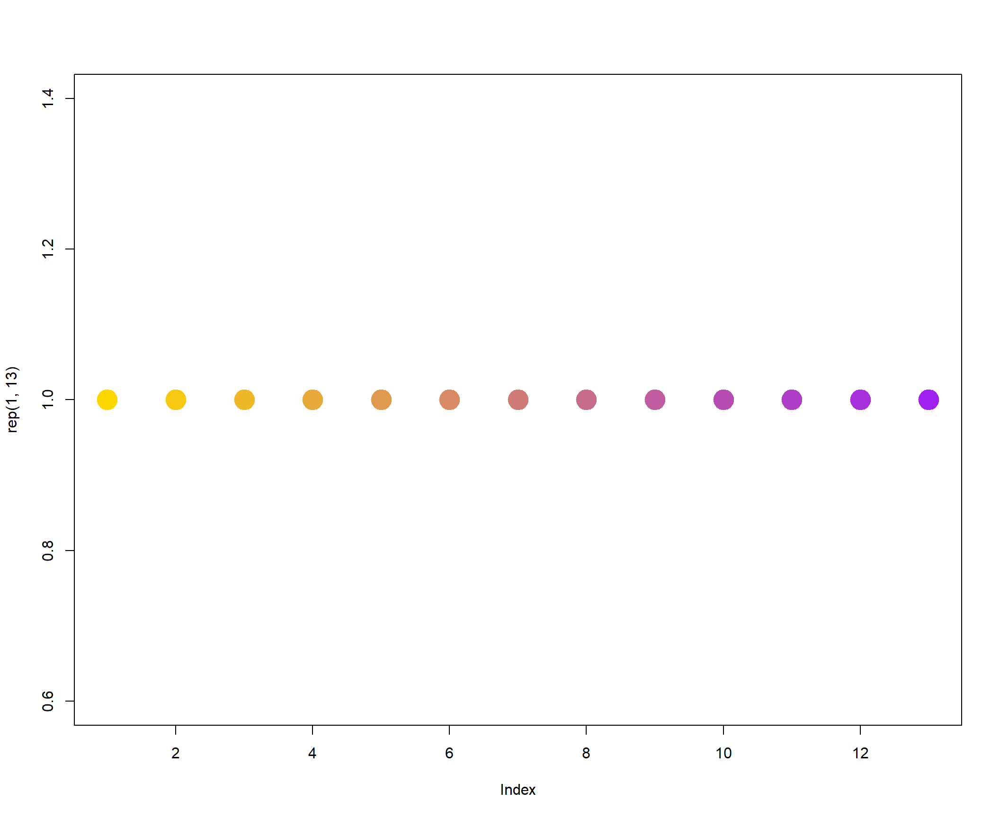

Last updated: 2022-02-08
Checks: 7 0
Knit directory: Denit_visualization_R/
This reproducible R Markdown analysis was created with workflowr (version 1.6.2). The Checks tab describes the reproducibility checks that were applied when the results were created. The Past versions tab lists the development history.
Great! Since the R Markdown file has been committed to the Git repository, you know the exact version of the code that produced these results.
Great job! The global environment was empty. Objects defined in the global environment can affect the analysis in your R Markdown file in unknown ways. For reproduciblity it’s best to always run the code in an empty environment.
The command set.seed(20210924) was run prior to running the code in the R Markdown file. Setting a seed ensures that any results that rely on randomness, e.g. subsampling or permutations, are reproducible.
Great job! Recording the operating system, R version, and package versions is critical for reproducibility.
Nice! There were no cached chunks for this analysis, so you can be confident that you successfully produced the results during this run.
Great job! Using relative paths to the files within your workflowr project makes it easier to run your code on other machines.
Great! You are using Git for version control. Tracking code development and connecting the code version to the results is critical for reproducibility.
The results in this page were generated with repository version e4de48a. See the Past versions tab to see a history of the changes made to the R Markdown and HTML files.
Note that you need to be careful to ensure that all relevant files for the analysis have been committed to Git prior to generating the results (you can use wflow_publish or wflow_git_commit). workflowr only checks the R Markdown file, but you know if there are other scripts or data files that it depends on. Below is the status of the Git repository when the results were generated:
Ignored files:
Ignored: .Rhistory
Ignored: .Rproj.user/
Untracked files:
Untracked: analysis/220113_pH_while_perturbation.Rmd
Untracked: analysis/220125_pH_during_perturbation.Rmd
Untracked: analysis/220126_pH_during_perturbation_mu_optT0.Rmd
Untracked: analysis/220128_Ammonia_pH_perturbation2.Rmd
Untracked: analysis/220128_Griess_pH_perturbation2.Rmd
Untracked: analysis/220131_Ammonia_pH_perturbation3.Rmd
Untracked: analysis/220131_Griess_pH_perturbation3.Rmd
Untracked: analysis/220131_pH_during_perturbation3.Rmd
Untracked: data/120321_soil_buffering_capacity_Nichols-B.xlsx
Untracked: data/210911_TOC_sample_plate1.xlsx
Untracked: data/210922_Griess_sample_plate1-investigating.xlsx
Untracked: data/210922_Griess_sample_plate1.xlsx
Untracked: data/210927_TOC_sample_plate1_100ul.xlsx
Untracked: data/210927_TOC_sample_plate1_10ul.xlsx
Untracked: data/210928_Griess_sample_plate1.xlsx
Untracked: data/211005_Griess_sample_plate1.xlsx
Untracked: data/211007_Griess_blank_plate1.xlsx
Untracked: data/211007_Griess_blank_plate2.xlsx
Untracked: data/211008_Griess_blank_plate0.xlsx
Untracked: data/211008_Griess_blank_plate1.xlsx
Untracked: data/211017_Griess_plate0.xlsx
Untracked: data/211017_Griess_plate1.xlsx
Untracked: data/211017_Griess_plate2.xlsx
Untracked: data/211017_Griess_plate3.xlsx
Untracked: data/211017_Griess_plate4.xlsx
Untracked: data/211017_Griess_plate5.xlsx
Untracked: data/211017_Griess_plate6.xlsx
Untracked: data/211017_Griess_plate7.xlsx
Untracked: data/211017_Griess_plate8.xlsx
Untracked: data/211019_Griess_plate1.xlsx
Untracked: data/211020_Griess_plate0.xlsx
Untracked: data/211020_Griess_plate1.xlsx
Untracked: data/211020_df_full_innate.xlsx
Untracked: data/211025_Griess_no3_fit_plate0.xlsx
Untracked: data/211025_Griess_no3_fit_plate1.xlsx
Untracked: data/211025_Griess_plate0.xlsx
Untracked: data/211025_Griess_plate1.xlsx
Untracked: data/211028_Griess_plate1.xlsx
Untracked: data/211028_Griess_plate1_no3_fit.xlsx
Untracked: data/211028_Griess_plate2.xlsx
Untracked: data/211028_Griess_plate2_no3_fit.xlsx
Untracked: data/211028_Griess_plate3.xlsx
Untracked: data/211028_Griess_plate3_no3_fit.xlsx
Untracked: data/211028_Griess_plate4.xlsx
Untracked: data/211028_Griess_plate4_no3_fit.xlsx
Untracked: data/211028_time_table.xlsx
Untracked: data/211127_Griess_SUP1.xlsx
Untracked: data/211127_Griess_SUP11.xlsx
Untracked: data/211127_Griess_SUP3.xlsx
Untracked: data/211127_Griess_SUP5.xlsx
Untracked: data/211127_Griess_SUP7.xlsx
Untracked: data/211127_Griess_SUP9.xlsx
Untracked: data/211127_Griess_plate0.xlsx
Untracked: data/211127_time_table.xlsx
Untracked: data/211128_Griess_plate1.xlsx
Untracked: data/211128_Griess_plate10.xlsx
Untracked: data/211128_Griess_plate11.xlsx
Untracked: data/211128_Griess_plate2.xlsx
Untracked: data/211128_Griess_plate3.xlsx
Untracked: data/211128_Griess_plate4.xlsx
Untracked: data/211128_Griess_plate5.xlsx
Untracked: data/211128_Griess_plate6.xlsx
Untracked: data/211128_Griess_plate7.xlsx
Untracked: data/211128_Griess_plate8.xlsx
Untracked: data/211128_Griess_plate9.xlsx
Untracked: data/211128_time_table.xlsx
Untracked: data/211201_pH_colorimetric.xlsx
Untracked: data/211203_slurry_vs_water_drying_table.xlsx
Untracked: data/211203_slurry_vs_water_drying_time.xlsx
Untracked: data/211208_pH_colorimetric_T3.xlsx
Untracked: data/211208_pH_colorimetric_T4.xlsx
Untracked: data/211208_pH_colorimetric_T5.xlsx
Untracked: data/211208_pH_colorimetric_plate1.xlsx
Untracked: data/211208_pH_colorimetric_plate2.xlsx
Untracked: data/211208_pH_colorimetric_plate3.xlsx
Untracked: data/211208_time_table.xlsx
Untracked: data/211209_OD600_T1.xlsx
Untracked: data/211209_OD600_T2.xlsx
Untracked: data/211209_OD600_T3.xlsx
Untracked: data/211209_time_table.xlsx
Untracked: data/211210_pH_colorimetric_T0.xlsx
Untracked: data/211210_pH_colorimetric_T1.xlsx
Untracked: data/211210_pH_colorimetric_T2.xlsx
Untracked: data/211210_pH_colorimetric_T3.xlsx
Untracked: data/211210_time_table.xlsx
Untracked: data/211218_pH_colorimetric_t0.xlsx
Untracked: data/211218_pH_colorimetric_t1.xlsx
Untracked: data/211218_pH_colorimetric_t2.xlsx
Untracked: data/211218_pH_colorimetric_t3.xlsx
Untracked: data/211218_pH_colorimetric_t4.xlsx
Untracked: data/211218_time_table.xlsx
Untracked: data/211220_Griess_plate1.xlsx
Untracked: data/211220_Griess_plate10.xlsx
Untracked: data/211220_Griess_plate11.xlsx
Untracked: data/211220_Griess_plate2.xlsx
Untracked: data/211220_Griess_plate3.xlsx
Untracked: data/211220_Griess_plate4.xlsx
Untracked: data/211220_Griess_plate5.xlsx
Untracked: data/211220_Griess_plate6.xlsx
Untracked: data/211220_Griess_plate7.xlsx
Untracked: data/211220_Griess_plate8.xlsx
Untracked: data/211220_Griess_plate9.xlsx
Untracked: data/211220_time_table_AU.xlsx
Untracked: data/211220_time_table_BN.xlsx
Untracked: data/211224_TOC_sample_plate1.xlsx
Untracked: data/220103_Griess_T0.xlsx
Untracked: data/220103_Griess_T1.xlsx
Untracked: data/220103_Griess_T11.xlsx
Untracked: data/220103_Griess_T12.xlsx
Untracked: data/220103_Griess_T2.xlsx
Untracked: data/220103_Griess_T3.xlsx
Untracked: data/220103_Griess_T4.xlsx
Untracked: data/220103_Griess_T5.xlsx
Untracked: data/220103_Griess_T6.xlsx
Untracked: data/220103_Griess_T7.xlsx
Untracked: data/220103_Griess_T8.xlsx
Untracked: data/220103_Griess_T9.xlsx
Untracked: data/220103_time_table.xlsx
Untracked: data/220106_Ammonia_sample_plate1.xlsx
Untracked: data/220107-2_Ammonia_sample_plate1.xlsx
Untracked: data/220107-3_Ammonia_sample_plate1.xlsx
Untracked: data/220107-4_Ammonia_sample_plate1.xlsx
Untracked: data/220107-5_Ammonia_sample_plate1.xlsx
Untracked: data/220107-6_Ammonia_sample_plate1.xlsx
Untracked: data/220107-7_Ammonia_sample_plate1.xlsx
Untracked: data/220107-8_Ammonia_sample_plate1.xlsx
Untracked: data/220107-9_Ammonia_sample_plate1.xlsx
Untracked: data/220107_Ammonia_sample_plate1.xlsx
Untracked: data/220108_Ammonia_sample_plate1.xlsx
Untracked: data/220110_Ammonia_sample_plate1.xlsx
Untracked: data/220110_Ammonia_sample_plate2.xlsx
Untracked: data/220111_Ammonia_sample_T0.xlsx
Untracked: data/220111_Ammonia_sample_T1.xlsx
Untracked: data/220111_Ammonia_sample_T2.xlsx
Untracked: data/220111_Ammonia_sample_T3.xlsx
Untracked: data/220111_TOC_sample_plate1.xlsx
Untracked: data/220112_Ammonia_sample_T11.xlsx
Untracked: data/220112_Ammonia_sample_T12.xlsx
Untracked: data/220112_Ammonia_sample_T4.xlsx
Untracked: data/220112_Ammonia_sample_T5.xlsx
Untracked: data/220112_Ammonia_sample_T6.xlsx
Untracked: data/220112_Ammonia_sample_T7.xlsx
Untracked: data/220112_Ammonia_sample_T8.xlsx
Untracked: data/220112_Ammonia_sample_T9.xlsx
Untracked: data/220113_pH_colorimetric_T0.xlsx
Untracked: data/220113_pH_colorimetric_T12.xlsx
Untracked: data/220113_pH_colorimetric_T2.xlsx
Untracked: data/220113_pH_colorimetric_T3.xlsx
Untracked: data/220113_pH_colorimetric_T8.xlsx
Untracked: data/220125_pH_colorimetric_pH1_mu_opt0.099.xlsx
Untracked: data/220125_pH_colorimetric_pH1_using6.66.xlsx
Untracked: data/220125_pH_colorimetric_pH2_mu_opt0.099.xlsx
Untracked: data/220125_pH_colorimetric_pH2_using6.66.xlsx
Untracked: data/220125_time_table.xlsx
Untracked: data/220128_Ammonia_sample_plate1.xlsx
Untracked: data/220128_Ammonia_sample_plate2.xlsx
Untracked: data/220128_Ammonia_sample_plate3.xlsx
Untracked: data/220128_Ammonia_sample_plate4.xlsx
Untracked: data/220128_Ammonia_sample_plate5.xlsx
Untracked: data/220128_Ammonia_sample_plate6.xlsx
Untracked: data/220128_Griess_plate1.xlsx
Untracked: data/220128_Griess_plate2.xlsx
Untracked: data/220128_Griess_plate3.xlsx
Untracked: data/220128_Griess_plate4.xlsx
Untracked: data/220128_Griess_plate5.xlsx
Untracked: data/220128_Griess_plate6.xlsx
Untracked: data/220128_time_table.xlsx
Untracked: data/220131_Ammonia_sample_plate1.xlsx
Untracked: data/220131_Ammonia_sample_plate2.xlsx
Untracked: data/220131_Ammonia_sample_plate3.xlsx
Untracked: data/220131_Ammonia_sample_plate4.xlsx
Untracked: data/220131_Ammonia_sample_plate5.xlsx
Untracked: data/220131_Ammonia_sample_plate6.xlsx
Untracked: data/220131_Griess_plate1.xlsx
Untracked: data/220131_Griess_plate2.xlsx
Untracked: data/220131_Griess_plate3.xlsx
Untracked: data/220131_Griess_plate4.xlsx
Untracked: data/220131_Griess_plate5.xlsx
Untracked: data/220131_Griess_plate6.xlsx
Untracked: data/220131_pH_colorimetric_pH1_mu_opt_T0.xlsx
Untracked: data/220131_pH_colorimetric_pH2_mu_opt_T0.xlsx
Untracked: data/220131_time_table.xlsx
Untracked: data/TOC_TN_measurement_2_labs_211014.xlsx
Untracked: data/dry_weight_curve(9.5.21).xlsx
Untracked: data/pH_data(11.17.21)-Midway_etc.xlsx
Untracked: data/pH_data(12.6.21)-Midway_incubation_endpoint.xlsx
Untracked: data/pH_data(9.14.21).xlsx
Untracked: data/pH_data(9.28.21).xlsx
Untracked: past_figures/
Note that any generated files, e.g. HTML, png, CSS, etc., are not included in this status report because it is ok for generated content to have uncommitted changes.
These are the previous versions of the repository in which changes were made to the R Markdown (analysis/220111_Ammonia_dynamics.Rmd) and HTML (docs/220111_Ammonia_dynamics.html) files. If you’ve configured a remote Git repository (see ?wflow_git_remote), click on the hyperlinks in the table below to view the files as they were in that past version.
| File | Version | Author | Date | Message |
|---|---|---|---|---|
| Rmd | e4de48a | KiseokUchicago | 2022-02-08 | wflow_publish(“analysis/220111_Ammonia_dynamics.Rmd”) |
Researcher: Kiseok Lee
Experiment Date: 12/29/21 - 1/3/22 (3 days)
Analysis Date: 1/13/21 Lab: Seppe Kuehn
# libraries
library(dplyr)
library(ggplot2)
library(RColorBrewer)
library(vegan)
library(tidyverse)
library(magrittr)
library(readxl)
library(reshape2)
library(gtools)
library(devtools)
library(openxlsx)
library(ape)
library(stringr)
library(tidyr)
library(ggrepel)
library(ggpubr)
## theme for ggplot
mytheme <- theme_bw() + theme(text = element_text(family = "serif")) +
theme(plot.title = element_text(size = 19,
hjust = 0.5, family = "serif")) +
theme(axis.title.x = element_text(size = 17,
hjust = 0.5, family = "serif")) +
theme(axis.title.y = element_text(size = 17,
hjust = 0.5, family = "serif")) +
theme(axis.text.x = element_text(hjust = 0.5,
vjust = 0.3, size = 13, family = "serif")) +
theme(axis.text.y = element_text(size = 10,
family = "serif")) + theme(panel.grid.major = element_blank()) +
theme(panel.grid.minor = element_blank(),
panel.background = element_blank(),
panel.border = element_blank(), plot.background = element_blank()) +
theme(axis.ticks = element_line(size = 1.1))
mytheme_2d <- theme_bw() + theme(text = element_text(family = "serif")) +
theme(plot.title = element_text(size = 19,
hjust = 0.5, family = "serif")) +
theme(axis.title.x = element_text(size = 17,
hjust = 0.5, family = "serif")) +
theme(axis.title.y = element_text(size = 17,
hjust = 0.5, family = "serif")) +
theme(axis.text.x = element_text(hjust = 0.5,
vjust = 0.3, size = 13, family = "serif")) +
theme(axis.text.y = element_text(size = 13,
family = "serif")) + # theme(panel.grid.major = element_blank()) + theme(panel.grid.minor = element_blank(),panel.background=element_blank(),plot.background=element_blank()) + family
family = "serif")) + # theme(panel.grid.major = element_blank()) + theme(panel.grid.minor = element_blank(),panel.background=element_blank(),plot.background=element_blank()) + =
family = "serif")) + # theme(panel.grid.major = element_blank()) + theme(panel.grid.minor = element_blank(),panel.background=element_blank(),plot.background=element_blank()) + "serif"))
family = "serif")) + # theme(panel.grid.major = element_blank()) + theme(panel.grid.minor = element_blank(),panel.background=element_blank(),plot.background=element_blank()) + +
family = "serif")) + # theme(panel.grid.major = element_blank()) + theme(panel.grid.minor = element_blank(),panel.background=element_blank(),plot.background=element_blank()) + #
family = "serif")) + # theme(panel.grid.major = element_blank()) + theme(panel.grid.minor = element_blank(),panel.background=element_blank(),plot.background=element_blank()) + theme(panel.grid.major
family = "serif")) + # theme(panel.grid.major = element_blank()) + theme(panel.grid.minor = element_blank(),panel.background=element_blank(),plot.background=element_blank()) + =
family = "serif")) + # theme(panel.grid.major = element_blank()) + theme(panel.grid.minor = element_blank(),panel.background=element_blank(),plot.background=element_blank()) + element_blank())
family = "serif")) + # theme(panel.grid.major = element_blank()) + theme(panel.grid.minor = element_blank(),panel.background=element_blank(),plot.background=element_blank()) + +
family = "serif")) + # theme(panel.grid.major = element_blank()) + theme(panel.grid.minor = element_blank(),panel.background=element_blank(),plot.background=element_blank()) + theme(panel.grid.minor
family = "serif")) + # theme(panel.grid.major = element_blank()) + theme(panel.grid.minor = element_blank(),panel.background=element_blank(),plot.background=element_blank()) + =
family = "serif")) + # theme(panel.grid.major = element_blank()) + theme(panel.grid.minor = element_blank(),panel.background=element_blank(),plot.background=element_blank()) + element_blank(),panel.background=element_blank(),plot.background=element_blank())
family = "serif")) + # theme(panel.grid.major = element_blank()) + theme(panel.grid.minor = element_blank(),panel.background=element_blank(),plot.background=element_blank()) + +
theme(axis.ticks = element_line(size = 1.1))
# color collection
my_color_collection <- c("#CBD588", "#5F7FC7",
"orange", "#AD6F3B", "#673770", "#D14285",
"#652926", "#C84248", "#8569D5", "#5E738F",
"#D1A33D", "#8A7C64", "#599861", "#616163",
"#FFCDB2", "#6D9F71", "#242F40", "#CCA43B",
"#F92A82", "#ED7B84", "#7EB77F", "#DEC4A1",
"#E5D1D0", "#0E8482", "#C9DAEA", "#337357",
"#95C623", "#E55812", "#04471C", "#F2D7EE",
"#D3BCC0", "#A5668B", "#69306D", "#0E103D",
"#1A535C", "#4ECDC4", "#F7FFF7", "#FF6B6B",
"#FFE66D", "#6699CC", "#FFF275", "#FF8C42",
"#FF3C38", "#A23E48", "#000000", "#CF5C36",
"#EEE5E9", "#7C7C7C", "#EFC88B", "#2E5266",
"#6E8898", "#9FB1BC", "#D3D0CB", "#E2C044",
"#5BC0EB", "#FDE74C", "#9BC53D", "#E55934",
"#FA7921", "#CD9BCD", "#508578", "#DA5724")
# for git push, use this instead of
# using wflow_git_push() git push -u
# origin master (in the Git app / in
# the working directory)
# for making pdf file
library(rmarkdown)
# render('analysis/~~.Rmd',
# 'pdf_document')Error: <text>:47:25: unexpected ')'
46: family = "serif")) + # theme(panel.grid.major = element_blank()) + theme(panel.grid.minor = element_blank(),panel.background=element_blank(),plot.background=element_blank()) + family
47: family = "serif")
^We are going to use the vcl3 treated standard curve that is fitted with pure Ammonia standards
# import file
df_T0 <- openxlsx::read.xlsx("data/220111_Ammonia_sample_T0.xlsx")
df_T1 <- openxlsx::read.xlsx("data/220111_Ammonia_sample_T1.xlsx")
df_T2 <- openxlsx::read.xlsx("data/220111_Ammonia_sample_T2.xlsx")
df_T3 <- openxlsx::read.xlsx("data/220111_Ammonia_sample_T3.xlsx")
df_T4 <- openxlsx::read.xlsx("data/220112_Ammonia_sample_T4.xlsx")
df_T5 <- openxlsx::read.xlsx("data/220112_Ammonia_sample_T5.xlsx")
df_T6 <- openxlsx::read.xlsx("data/220112_Ammonia_sample_T6.xlsx")
df_T7 <- openxlsx::read.xlsx("data/220112_Ammonia_sample_T7.xlsx")
df_T8 <- openxlsx::read.xlsx("data/220112_Ammonia_sample_T8.xlsx")
df_T9 <- openxlsx::read.xlsx("data/220112_Ammonia_sample_T9.xlsx")
# df_T10 <-
# openxlsx::read.xlsx('data/220111_Ammonia_sample_T10.xlsx')
# # is still in freezer (2M KCl treated
# & spin down)
df_T11 <- openxlsx::read.xlsx("data/220112_Ammonia_sample_T11.xlsx")
df_T12 <- openxlsx::read.xlsx("data/220112_Ammonia_sample_T12.xlsx")
head(df_T0) Well Extraction_method Extraction_ul Nitrite_input Nitrate_input Soil
1 A01 0.5_1_1.5 70 0 2 NicholsC
2 A02 0.5_1_1.5 70 0 2 NicholsC
3 A03 0.5_1_1.5 70 0 2 NicholsC
4 A04 0.5_1_1.5 70 0 2 NicholsC
5 A05 0.5_1_1.5 70 0 2 NicholsC
6 A06 0.5_1_1.5 70 0 2 NicholsC
Titration_type Concentration_M Added_ul Sample_type Time_point Ammonia_OD650
1 NaOH 0.1500 5 Slurry T0 0
2 NaOH 0.0500 5 Slurry T0 0
3 HCl 0.0125 5 Slurry T0 0
4 HCl 0.0500 5 Slurry T0 0
5 HCl 0.1500 5 Slurry T0 0
6 HCl 0.2500 5 Slurry T0 0
Ammonia_ppm
1 0.2858188
2 0.2858188
3 0.2858188
4 0.2858188
5 0.2858188
6 0.2858188colnames(df_T0) [1] "Well" "Extraction_method" "Extraction_ul"
[4] "Nitrite_input" "Nitrate_input" "Soil"
[7] "Titration_type" "Concentration_M" "Added_ul"
[10] "Sample_type" "Time_point" "Ammonia_OD650"
[13] "Ammonia_ppm" dim(df_T0)[1] 96 13head(df_T1) Well Extraction_method Extraction_ul Nitrite_input Nitrate_input Soil
1 A01 0.5_1_1.5 70 0 2 NicholsC
2 A02 0.5_1_1.5 70 0 2 NicholsC
3 A03 0.5_1_1.5 70 0 2 NicholsC
4 A04 0.5_1_1.5 70 0 2 NicholsC
5 A05 0.5_1_1.5 70 0 2 NicholsC
6 A06 0.5_1_1.5 70 0 2 NicholsC
Titration_type Concentration_M Added_ul Sample_type Time_point Ammonia_OD650
1 NaOH 0.1500 5 Slurry T1 0.0000
2 NaOH 0.0500 5 Slurry T1 0.0026
3 HCl 0.0125 5 Slurry T1 0.0000
4 HCl 0.0500 5 Slurry T1 0.0000
5 HCl 0.1500 5 Slurry T1 0.0000
6 HCl 0.2500 5 Slurry T1 0.0000
Ammonia_ppm
1 0.2858188
2 0.3156992
3 0.2858188
4 0.2858188
5 0.2858188
6 0.2858188colnames(df_T1) [1] "Well" "Extraction_method" "Extraction_ul"
[4] "Nitrite_input" "Nitrate_input" "Soil"
[7] "Titration_type" "Concentration_M" "Added_ul"
[10] "Sample_type" "Time_point" "Ammonia_OD650"
[13] "Ammonia_ppm" dim(df_T1)[1] 96 13head(df_T2) Well Extraction_method Extraction_ul Nitrite_input Nitrate_input Soil
1 A01 0.5_1_1.5 70 0 2 NicholsC
2 A02 0.5_1_1.5 70 0 2 NicholsC
3 A03 0.5_1_1.5 70 0 2 NicholsC
4 A04 0.5_1_1.5 70 0 2 NicholsC
5 A05 0.5_1_1.5 70 0 2 NicholsC
6 A06 0.5_1_1.5 70 0 2 NicholsC
Titration_type Concentration_M Added_ul Sample_type Time_point Ammonia_OD650
1 NaOH 0.1500 5 Slurry T2 0.0006
2 NaOH 0.0500 5 Slurry T2 0.0066
3 HCl 0.0125 5 Slurry T2 0.0116
4 HCl 0.0500 5 Slurry T2 0.0186
5 HCl 0.1500 5 Slurry T2 0.0386
6 HCl 0.2500 5 Slurry T2 0.0326
Ammonia_ppm
1 0.2927137
2 0.3616826
3 0.4191849
4 0.4997312
5 0.7301410
6 0.6609748colnames(df_T2) [1] "Well" "Extraction_method" "Extraction_ul"
[4] "Nitrite_input" "Nitrate_input" "Soil"
[7] "Titration_type" "Concentration_M" "Added_ul"
[10] "Sample_type" "Time_point" "Ammonia_OD650"
[13] "Ammonia_ppm" dim(df_T2)[1] 96 13head(df_T3) Well Extraction_method Extraction_ul Nitrite_input Nitrate_input Soil
1 A01 0.5_1_1.5 70 0 2 NicholsC
2 A02 0.5_1_1.5 70 0 2 NicholsC
3 A03 0.5_1_1.5 70 0 2 NicholsC
4 A04 0.5_1_1.5 70 0 2 NicholsC
5 A05 0.5_1_1.5 70 0 2 NicholsC
6 A06 0.5_1_1.5 70 0 2 NicholsC
Titration_type Concentration_M Added_ul Sample_type Time_point Ammonia_OD650
1 NaOH 0.1500 5 Slurry T3 0.0526
2 NaOH 0.0500 5 Slurry T3 0.0866
3 HCl 0.0125 5 Slurry T3 0.0846
4 HCl 0.0500 5 Slurry T3 0.1006
5 HCl 0.1500 5 Slurry T3 0.1156
6 HCl 0.2500 5 Slurry T3 0.0936
Ammonia_ppm
1 0.8916733
2 1.2848134
3 1.2616541
4 1.4470453
5 1.6210935
6 1.3659036colnames(df_T3) [1] "Well" "Extraction_method" "Extraction_ul"
[4] "Nitrite_input" "Nitrate_input" "Soil"
[7] "Titration_type" "Concentration_M" "Added_ul"
[10] "Sample_type" "Time_point" "Ammonia_OD650"
[13] "Ammonia_ppm" dim(df_T3)[1] 96 13head(df_T4) Well Extraction_method Extraction_ul Nitrite_input Nitrate_input Soil
1 A01 0.5_1_1.5 70 0 2 NicholsC
2 A02 0.5_1_1.5 70 0 2 NicholsC
3 A03 0.5_1_1.5 70 0 2 NicholsC
4 A04 0.5_1_1.5 70 0 2 NicholsC
5 A05 0.5_1_1.5 70 0 2 NicholsC
6 A06 0.5_1_1.5 70 0 2 NicholsC
Titration_type Concentration_M Added_ul Sample_type Time_point Ammonia_OD650
1 NaOH 0.1500 5 Slurry T4 0.14555
2 NaOH 0.0500 5 Slurry T4 0.14025
3 HCl 0.0125 5 Slurry T4 0.14440
4 HCl 0.0500 5 Slurry T4 0.15030
5 HCl 0.1500 5 Slurry T4 0.16280
6 HCl 0.2500 5 Slurry T4 0.13095
Ammonia_ppm
1 1.883496
2 1.820990
3 1.869932
4 1.939536
5 2.087100
6 1.711365colnames(df_T4) [1] "Well" "Extraction_method" "Extraction_ul"
[4] "Nitrite_input" "Nitrate_input" "Soil"
[7] "Titration_type" "Concentration_M" "Added_ul"
[10] "Sample_type" "Time_point" "Ammonia_OD650"
[13] "Ammonia_ppm" dim(df_T4)[1] 96 13head(df_T5) Well Extraction_method Extraction_ul Nitrite_input Nitrate_input Soil
1 A01 0.5_1_1.5 70 0 2 NicholsC
2 A02 0.5_1_1.5 70 0 2 NicholsC
3 A03 0.5_1_1.5 70 0 2 NicholsC
4 A04 0.5_1_1.5 70 0 2 NicholsC
5 A05 0.5_1_1.5 70 0 2 NicholsC
6 A06 0.5_1_1.5 70 0 2 NicholsC
Titration_type Concentration_M Added_ul Sample_type Time_point Ammonia_OD650
1 NaOH 0.1500 5 Slurry T5 0.11490
2 NaOH 0.0500 5 Slurry T5 0.16720
3 HCl 0.0125 5 Slurry T5 0.16595
4 HCl 0.0500 5 Slurry T5 0.11570
5 HCl 0.1500 5 Slurry T5 0.13255
6 HCl 0.2500 5 Slurry T5 0.11235
Ammonia_ppm
1 1.522343
2 2.139073
3 2.124306
4 1.531760
5 1.730220
6 1.492331colnames(df_T5) [1] "Well" "Extraction_method" "Extraction_ul"
[4] "Nitrite_input" "Nitrate_input" "Soil"
[7] "Titration_type" "Concentration_M" "Added_ul"
[10] "Sample_type" "Time_point" "Ammonia_OD650"
[13] "Ammonia_ppm" dim(df_T5)[1] 96 13dim(df_T6)[1] 96 13dim(df_T7)[1] 96 13dim(df_T8)[1] 96 13dim(df_T9)[1] 96 13dim(df_T10)Error in eval(expr, envir, enclos): object 'df_T10' not founddim(df_T11)[1] 96 13dim(df_T12)[1] 96 13# X1 to Well df_T0 %<>% rename(Well =
# X1) df_T2 %<>% rename(Well = X1)
# df_T3 %<>% rename(Well = X1) df_T4
# %<>% rename(Well = X1) df_T5 %<>%
# rename(Well = X1) df_T6 %<>%
# rename(Well = X1) df_T7 %<>%
# rename(Well = X1) df_T8 %<>%
# rename(Well = X1) df_T9 %<>%
# rename(Well = X1) df_T10 %<>%
# rename(Well = X1) df_T11 %<>%
# rename(Well = X1)
# remove wells that were contaminated
# during the experiment
df_T1 %<>%
filter(!(Well %in% c("B03", "A05", "A12",
"B12"))) # filter burst issueError in df_T1 %<>% filter(!(Well %in% c("B03", "A05", "A12", "B12"))): could not find function "%<>%"df_T6 %<>%
filter(!(Well %in% c("A11"))) # filter burst issueError in df_T6 %<>% filter(!(Well %in% c("A11"))): could not find function "%<>%"df_T8 %<>%
filter(!(Well %in% c("A07", "A08", "E08"))) # filter burst issueError in df_T8 %<>% filter(!(Well %in% c("A07", "A08", "E08"))): could not find function "%<>%"df_T11 %<>%
filter(!(Well %in% c("A01"))) # filter burst issue # G11 was removed because of abnormal value compared to other 2 replicatesError in df_T11 %<>% filter(!(Well %in% c("A01"))): could not find function "%<>%"# dim(df_T4)
# bind two dataframe
df_T <- rbind(df_T0, df_T1, df_T2, df_T3,
df_T4, df_T5, df_T6, df_T7, df_T8, df_T9,
df_T11, df_T12)
head(df_T) Well Extraction_method Extraction_ul Nitrite_input Nitrate_input Soil
1 A01 0.5_1_1.5 70 0 2 NicholsC
2 A02 0.5_1_1.5 70 0 2 NicholsC
3 A03 0.5_1_1.5 70 0 2 NicholsC
4 A04 0.5_1_1.5 70 0 2 NicholsC
5 A05 0.5_1_1.5 70 0 2 NicholsC
6 A06 0.5_1_1.5 70 0 2 NicholsC
Titration_type Concentration_M Added_ul Sample_type Time_point Ammonia_OD650
1 NaOH 0.1500 5 Slurry T0 0
2 NaOH 0.0500 5 Slurry T0 0
3 HCl 0.0125 5 Slurry T0 0
4 HCl 0.0500 5 Slurry T0 0
5 HCl 0.1500 5 Slurry T0 0
6 HCl 0.2500 5 Slurry T0 0
Ammonia_ppm
1 0.2858188
2 0.2858188
3 0.2858188
4 0.2858188
5 0.2858188
6 0.2858188# remove NA
dim(df_T)[1] 1152 13df_T <- na.omit(df_T)
dim(df_T)[1] 1152 13# multiply dilution factor which is 5/2
df_T %<>%
mutate(Ammonia_ppm = Ammonia_ppm * (5/2))Error in df_T %<>% mutate(Ammonia_ppm = Ammonia_ppm * (5/2)): could not find function "%<>%"head(df_T) Well Extraction_method Extraction_ul Nitrite_input Nitrate_input Soil
1 A01 0.5_1_1.5 70 0 2 NicholsC
2 A02 0.5_1_1.5 70 0 2 NicholsC
3 A03 0.5_1_1.5 70 0 2 NicholsC
4 A04 0.5_1_1.5 70 0 2 NicholsC
5 A05 0.5_1_1.5 70 0 2 NicholsC
6 A06 0.5_1_1.5 70 0 2 NicholsC
Titration_type Concentration_M Added_ul Sample_type Time_point Ammonia_OD650
1 NaOH 0.1500 5 Slurry T0 0
2 NaOH 0.0500 5 Slurry T0 0
3 HCl 0.0125 5 Slurry T0 0
4 HCl 0.0500 5 Slurry T0 0
5 HCl 0.1500 5 Slurry T0 0
6 HCl 0.2500 5 Slurry T0 0
Ammonia_ppm
1 0.2858188
2 0.2858188
3 0.2858188
4 0.2858188
5 0.2858188
6 0.2858188# extraction correction factor (only
# about 80% extraction)
df_T %<>%
mutate(Ammonia_ppm = Ammonia_ppm * (5/4))Error in df_T %<>% mutate(Ammonia_ppm = Ammonia_ppm * (5/4)): could not find function "%<>%"# converting to mM
df_T %<>%
mutate(NH4_M = Ammonia_ppm/(14.0067 *
1000)) # Nitrogen molecular weight Error in df_T %<>% mutate(NH4_M = Ammonia_ppm/(14.0067 * 1000)): could not find function "%<>%"df_T %<>%
mutate(NH4_mM = NH4_M * 1000) # Nitrogen molecular weight Error in df_T %<>% mutate(NH4_mM = NH4_M * 1000): could not find function "%<>%"colnames(df_T) [1] "Well" "Extraction_method" "Extraction_ul"
[4] "Nitrite_input" "Nitrate_input" "Soil"
[7] "Titration_type" "Concentration_M" "Added_ul"
[10] "Sample_type" "Time_point" "Ammonia_OD650"
[13] "Ammonia_ppm" # Get the metadata for time point and
# left join
Time_table <- openxlsx::read.xlsx("data/220103_time_table.xlsx")
# Time_table_BN <-
# openxlsx::read.xlsx('data/220111_time_table_BN.xlsx')
# Time_table <- rbind(Time_table_AU,
# Time_table_BN)
Time_table %<>%
select(-Date)Error in Time_table %<>% select(-Date): could not find function "%<>%"dim(df_T)[1] 1152 13df_T <- df_T %>%
left_join(Time_table, by = ("Time_point" = "Time_point"))Error in df_T %>% left_join(Time_table, by = ("Time_point" = "Time_point")): could not find function "%>%"dim(df_T)[1] 1152 13colnames(df_T) [1] "Well" "Extraction_method" "Extraction_ul"
[4] "Nitrite_input" "Nitrate_input" "Soil"
[7] "Titration_type" "Concentration_M" "Added_ul"
[10] "Sample_type" "Time_point" "Ammonia_OD650"
[13] "Ammonia_ppm" # time_point order
df_T$Time_point <- factor(df_T$Time_point,
levels = paste0("T", 0:12))# plot to see
ggplot(df_T, aes(x = Time_point, y = NH4_mM,
color = Sample_type, group = Sample_type)) +
geom_point(size = 2.5, shape = 21) +
# geom_line(size=1)+
scale_fill_brewer(palette = "Set2") + ylab("NH4+ (mM) \n") +
xlab("\n Time point") + # scale_y_continuous(breaks = seq(0,0.3,0.05), limits=c(0, 0.3))+ xlab("\n
xlab("\n Time point") + # scale_y_continuous(breaks = seq(0,0.3,0.05), limits=c(0, 0.3))+ Time
xlab("\n Time point") + # scale_y_continuous(breaks = seq(0,0.3,0.05), limits=c(0, 0.3))+ point")
xlab("\n Time point") + # scale_y_continuous(breaks = seq(0,0.3,0.05), limits=c(0, 0.3))+ +
xlab("\n Time point") + # scale_y_continuous(breaks = seq(0,0.3,0.05), limits=c(0, 0.3))+ #
xlab("\n Time point") + # scale_y_continuous(breaks = seq(0,0.3,0.05), limits=c(0, 0.3))+ scale_y_continuous(breaks
xlab("\n Time point") + # scale_y_continuous(breaks = seq(0,0.3,0.05), limits=c(0, 0.3))+ =
xlab("\n Time point") + # scale_y_continuous(breaks = seq(0,0.3,0.05), limits=c(0, 0.3))+ seq(0,0.3,0.05),
xlab("\n Time point") + # scale_y_continuous(breaks = seq(0,0.3,0.05), limits=c(0, 0.3))+ limits=c(0,
xlab("\n Time point") + # scale_y_continuous(breaks = seq(0,0.3,0.05), limits=c(0, 0.3))+ 0.3))+
ggtitle("Without averaging \n") + mytheme_2dError in ggplot(df_T, aes(x = Time_point, y = NH4_mM, color = Sample_type, : could not find function "ggplot"# plot to see
ggplot(df_T0, aes(x = Time_point, y = Ammonia_ppm,
color = Sample_type, group = Sample_type)) +
geom_point(size = 2.5, shape = 21) +
# geom_line(size=1)+
scale_fill_brewer(palette = "Set2") + ylab("Ammonium-N ppm \n") +
xlab("\n Time point") + # scale_y_continuous(breaks = seq(0,0.3,0.05), limits=c(0, 0.3))+ xlab("\n
xlab("\n Time point") + # scale_y_continuous(breaks = seq(0,0.3,0.05), limits=c(0, 0.3))+ Time
xlab("\n Time point") + # scale_y_continuous(breaks = seq(0,0.3,0.05), limits=c(0, 0.3))+ point")
xlab("\n Time point") + # scale_y_continuous(breaks = seq(0,0.3,0.05), limits=c(0, 0.3))+ +
xlab("\n Time point") + # scale_y_continuous(breaks = seq(0,0.3,0.05), limits=c(0, 0.3))+ #
xlab("\n Time point") + # scale_y_continuous(breaks = seq(0,0.3,0.05), limits=c(0, 0.3))+ scale_y_continuous(breaks
xlab("\n Time point") + # scale_y_continuous(breaks = seq(0,0.3,0.05), limits=c(0, 0.3))+ =
xlab("\n Time point") + # scale_y_continuous(breaks = seq(0,0.3,0.05), limits=c(0, 0.3))+ seq(0,0.3,0.05),
xlab("\n Time point") + # scale_y_continuous(breaks = seq(0,0.3,0.05), limits=c(0, 0.3))+ limits=c(0,
xlab("\n Time point") + # scale_y_continuous(breaks = seq(0,0.3,0.05), limits=c(0, 0.3))+ 0.3))+
ggtitle("Without averaging \n") + mytheme_2dError in ggplot(df_T0, aes(x = Time_point, y = Ammonia_ppm, color = Sample_type, : could not find function "ggplot"# plot to see
ggplot(df_T1, aes(x = Time_point, y = Ammonia_ppm,
color = Sample_type, group = Sample_type)) +
geom_point(size = 2.5, shape = 21) +
# geom_line(size=1)+
scale_fill_brewer(palette = "Set2") + ylab("Ammonium-N ppm \n") +
xlab("\n Ammonia_spike_in (mM)") + # scale_y_continuous(breaks = seq(0,0.3,0.05), limits=c(0, 0.3))+ xlab("\n
xlab("\n Ammonia_spike_in (mM)") + # scale_y_continuous(breaks = seq(0,0.3,0.05), limits=c(0, 0.3))+ Ammonia_spike_in
xlab("\n Ammonia_spike_in (mM)") + # scale_y_continuous(breaks = seq(0,0.3,0.05), limits=c(0, 0.3))+ (mM)")
xlab("\n Ammonia_spike_in (mM)") + # scale_y_continuous(breaks = seq(0,0.3,0.05), limits=c(0, 0.3))+ +
xlab("\n Ammonia_spike_in (mM)") + # scale_y_continuous(breaks = seq(0,0.3,0.05), limits=c(0, 0.3))+ #
xlab("\n Ammonia_spike_in (mM)") + # scale_y_continuous(breaks = seq(0,0.3,0.05), limits=c(0, 0.3))+ scale_y_continuous(breaks
xlab("\n Ammonia_spike_in (mM)") + # scale_y_continuous(breaks = seq(0,0.3,0.05), limits=c(0, 0.3))+ =
xlab("\n Ammonia_spike_in (mM)") + # scale_y_continuous(breaks = seq(0,0.3,0.05), limits=c(0, 0.3))+ seq(0,0.3,0.05),
xlab("\n Ammonia_spike_in (mM)") + # scale_y_continuous(breaks = seq(0,0.3,0.05), limits=c(0, 0.3))+ limits=c(0,
xlab("\n Ammonia_spike_in (mM)") + # scale_y_continuous(breaks = seq(0,0.3,0.05), limits=c(0, 0.3))+ 0.3))+
ggtitle("Without averaging \n") + mytheme_2dError in ggplot(df_T1, aes(x = Time_point, y = Ammonia_ppm, color = Sample_type, : could not find function "ggplot"# plot to see
ggplot(df_T2, aes(x = Time_point, y = Ammonia_ppm,
color = Sample_type, group = Sample_type)) +
geom_point(size = 2.5, shape = 21) +
# geom_line(size=1)+
scale_fill_brewer(palette = "Set2") + ylab("Ammonium-N ppm \n") +
xlab("\n Ammonia_spike_in (mM)") + # scale_y_continuous(breaks = seq(0,0.3,0.05), limits=c(0, 0.3))+ xlab("\n
xlab("\n Ammonia_spike_in (mM)") + # scale_y_continuous(breaks = seq(0,0.3,0.05), limits=c(0, 0.3))+ Ammonia_spike_in
xlab("\n Ammonia_spike_in (mM)") + # scale_y_continuous(breaks = seq(0,0.3,0.05), limits=c(0, 0.3))+ (mM)")
xlab("\n Ammonia_spike_in (mM)") + # scale_y_continuous(breaks = seq(0,0.3,0.05), limits=c(0, 0.3))+ +
xlab("\n Ammonia_spike_in (mM)") + # scale_y_continuous(breaks = seq(0,0.3,0.05), limits=c(0, 0.3))+ #
xlab("\n Ammonia_spike_in (mM)") + # scale_y_continuous(breaks = seq(0,0.3,0.05), limits=c(0, 0.3))+ scale_y_continuous(breaks
xlab("\n Ammonia_spike_in (mM)") + # scale_y_continuous(breaks = seq(0,0.3,0.05), limits=c(0, 0.3))+ =
xlab("\n Ammonia_spike_in (mM)") + # scale_y_continuous(breaks = seq(0,0.3,0.05), limits=c(0, 0.3))+ seq(0,0.3,0.05),
xlab("\n Ammonia_spike_in (mM)") + # scale_y_continuous(breaks = seq(0,0.3,0.05), limits=c(0, 0.3))+ limits=c(0,
xlab("\n Ammonia_spike_in (mM)") + # scale_y_continuous(breaks = seq(0,0.3,0.05), limits=c(0, 0.3))+ 0.3))+
ggtitle("Without averaging \n") + mytheme_2dError in ggplot(df_T2, aes(x = Time_point, y = Ammonia_ppm, color = Sample_type, : could not find function "ggplot"# plot to see
ggplot(df_T3, aes(x = Time_point, y = Ammonia_ppm,
color = Sample_type, group = Sample_type)) +
geom_point(size = 2.5, shape = 21) +
# geom_line(size=1)+
scale_fill_brewer(palette = "Set2") + ylab("Ammonium-N ppm \n") +
xlab("\n Ammonia_spike_in (mM)") + # scale_y_continuous(breaks = seq(0,0.3,0.05), limits=c(0, 0.3))+ xlab("\n
xlab("\n Ammonia_spike_in (mM)") + # scale_y_continuous(breaks = seq(0,0.3,0.05), limits=c(0, 0.3))+ Ammonia_spike_in
xlab("\n Ammonia_spike_in (mM)") + # scale_y_continuous(breaks = seq(0,0.3,0.05), limits=c(0, 0.3))+ (mM)")
xlab("\n Ammonia_spike_in (mM)") + # scale_y_continuous(breaks = seq(0,0.3,0.05), limits=c(0, 0.3))+ +
xlab("\n Ammonia_spike_in (mM)") + # scale_y_continuous(breaks = seq(0,0.3,0.05), limits=c(0, 0.3))+ #
xlab("\n Ammonia_spike_in (mM)") + # scale_y_continuous(breaks = seq(0,0.3,0.05), limits=c(0, 0.3))+ scale_y_continuous(breaks
xlab("\n Ammonia_spike_in (mM)") + # scale_y_continuous(breaks = seq(0,0.3,0.05), limits=c(0, 0.3))+ =
xlab("\n Ammonia_spike_in (mM)") + # scale_y_continuous(breaks = seq(0,0.3,0.05), limits=c(0, 0.3))+ seq(0,0.3,0.05),
xlab("\n Ammonia_spike_in (mM)") + # scale_y_continuous(breaks = seq(0,0.3,0.05), limits=c(0, 0.3))+ limits=c(0,
xlab("\n Ammonia_spike_in (mM)") + # scale_y_continuous(breaks = seq(0,0.3,0.05), limits=c(0, 0.3))+ 0.3))+
ggtitle("Without averaging \n") + mytheme_2dError in ggplot(df_T3, aes(x = Time_point, y = Ammonia_ppm, color = Sample_type, : could not find function "ggplot"# plot to see
ggplot(df_T4, aes(x = Time_point, y = Ammonia_ppm,
color = Sample_type, group = Sample_type)) +
geom_point(size = 2.5, shape = 21) +
# geom_line(size=1)+
scale_fill_brewer(palette = "Set2") + ylab("Ammonium-N ppm \n") +
xlab("\n Ammonia_spike_in (mM)") + # scale_y_continuous(breaks = seq(0,0.3,0.05), limits=c(0, 0.3))+ xlab("\n
xlab("\n Ammonia_spike_in (mM)") + # scale_y_continuous(breaks = seq(0,0.3,0.05), limits=c(0, 0.3))+ Ammonia_spike_in
xlab("\n Ammonia_spike_in (mM)") + # scale_y_continuous(breaks = seq(0,0.3,0.05), limits=c(0, 0.3))+ (mM)")
xlab("\n Ammonia_spike_in (mM)") + # scale_y_continuous(breaks = seq(0,0.3,0.05), limits=c(0, 0.3))+ +
xlab("\n Ammonia_spike_in (mM)") + # scale_y_continuous(breaks = seq(0,0.3,0.05), limits=c(0, 0.3))+ #
xlab("\n Ammonia_spike_in (mM)") + # scale_y_continuous(breaks = seq(0,0.3,0.05), limits=c(0, 0.3))+ scale_y_continuous(breaks
xlab("\n Ammonia_spike_in (mM)") + # scale_y_continuous(breaks = seq(0,0.3,0.05), limits=c(0, 0.3))+ =
xlab("\n Ammonia_spike_in (mM)") + # scale_y_continuous(breaks = seq(0,0.3,0.05), limits=c(0, 0.3))+ seq(0,0.3,0.05),
xlab("\n Ammonia_spike_in (mM)") + # scale_y_continuous(breaks = seq(0,0.3,0.05), limits=c(0, 0.3))+ limits=c(0,
xlab("\n Ammonia_spike_in (mM)") + # scale_y_continuous(breaks = seq(0,0.3,0.05), limits=c(0, 0.3))+ 0.3))+
ggtitle("Without averaging \n") + mytheme_2dError in ggplot(df_T4, aes(x = Time_point, y = Ammonia_ppm, color = Sample_type, : could not find function "ggplot"# plot to see
ggplot(df_T5, aes(x = Time_point, y = Ammonia_ppm,
color = Sample_type, group = Sample_type)) +
geom_point(size = 2.5, shape = 21) +
# geom_line(size=1)+
scale_fill_brewer(palette = "Set2") + ylab("Ammonium-N ppm \n") +
xlab("\n Ammonia_spike_in (mM)") + # scale_y_continuous(breaks = seq(0,0.3,0.05), limits=c(0, 0.3))+ xlab("\n
xlab("\n Ammonia_spike_in (mM)") + # scale_y_continuous(breaks = seq(0,0.3,0.05), limits=c(0, 0.3))+ Ammonia_spike_in
xlab("\n Ammonia_spike_in (mM)") + # scale_y_continuous(breaks = seq(0,0.3,0.05), limits=c(0, 0.3))+ (mM)")
xlab("\n Ammonia_spike_in (mM)") + # scale_y_continuous(breaks = seq(0,0.3,0.05), limits=c(0, 0.3))+ +
xlab("\n Ammonia_spike_in (mM)") + # scale_y_continuous(breaks = seq(0,0.3,0.05), limits=c(0, 0.3))+ #
xlab("\n Ammonia_spike_in (mM)") + # scale_y_continuous(breaks = seq(0,0.3,0.05), limits=c(0, 0.3))+ scale_y_continuous(breaks
xlab("\n Ammonia_spike_in (mM)") + # scale_y_continuous(breaks = seq(0,0.3,0.05), limits=c(0, 0.3))+ =
xlab("\n Ammonia_spike_in (mM)") + # scale_y_continuous(breaks = seq(0,0.3,0.05), limits=c(0, 0.3))+ seq(0,0.3,0.05),
xlab("\n Ammonia_spike_in (mM)") + # scale_y_continuous(breaks = seq(0,0.3,0.05), limits=c(0, 0.3))+ limits=c(0,
xlab("\n Ammonia_spike_in (mM)") + # scale_y_continuous(breaks = seq(0,0.3,0.05), limits=c(0, 0.3))+ 0.3))+
ggtitle("Without averaging \n") + mytheme_2dError in ggplot(df_T5, aes(x = Time_point, y = Ammonia_ppm, color = Sample_type, : could not find function "ggplot"# plot to see
ggplot(df_T6, aes(x = Time_point, y = Ammonia_ppm,
color = Sample_type, group = Sample_type)) +
geom_point(size = 2.5, shape = 21) +
# geom_line(size=1)+
scale_fill_brewer(palette = "Set2") + ylab("Ammonium-N ppm \n") +
xlab("\n Ammonia_spike_in (mM)") + # scale_y_continuous(breaks = seq(0,0.3,0.05), limits=c(0, 0.3))+ xlab("\n
xlab("\n Ammonia_spike_in (mM)") + # scale_y_continuous(breaks = seq(0,0.3,0.05), limits=c(0, 0.3))+ Ammonia_spike_in
xlab("\n Ammonia_spike_in (mM)") + # scale_y_continuous(breaks = seq(0,0.3,0.05), limits=c(0, 0.3))+ (mM)")
xlab("\n Ammonia_spike_in (mM)") + # scale_y_continuous(breaks = seq(0,0.3,0.05), limits=c(0, 0.3))+ +
xlab("\n Ammonia_spike_in (mM)") + # scale_y_continuous(breaks = seq(0,0.3,0.05), limits=c(0, 0.3))+ #
xlab("\n Ammonia_spike_in (mM)") + # scale_y_continuous(breaks = seq(0,0.3,0.05), limits=c(0, 0.3))+ scale_y_continuous(breaks
xlab("\n Ammonia_spike_in (mM)") + # scale_y_continuous(breaks = seq(0,0.3,0.05), limits=c(0, 0.3))+ =
xlab("\n Ammonia_spike_in (mM)") + # scale_y_continuous(breaks = seq(0,0.3,0.05), limits=c(0, 0.3))+ seq(0,0.3,0.05),
xlab("\n Ammonia_spike_in (mM)") + # scale_y_continuous(breaks = seq(0,0.3,0.05), limits=c(0, 0.3))+ limits=c(0,
xlab("\n Ammonia_spike_in (mM)") + # scale_y_continuous(breaks = seq(0,0.3,0.05), limits=c(0, 0.3))+ 0.3))+
ggtitle("Without averaging \n") + mytheme_2dError in ggplot(df_T6, aes(x = Time_point, y = Ammonia_ppm, color = Sample_type, : could not find function "ggplot"# plot to see
ggplot(df_T7, aes(x = Time_point, y = Ammonia_ppm,
color = Sample_type, group = Sample_type)) +
geom_point(size = 2.5, shape = 21) +
# geom_line(size=1)+
scale_fill_brewer(palette = "Set2") + ylab("Ammonium-N ppm \n") +
xlab("\n Ammonia_spike_in (mM)") + # scale_y_continuous(breaks = seq(0,0.3,0.05), limits=c(0, 0.3))+ xlab("\n
xlab("\n Ammonia_spike_in (mM)") + # scale_y_continuous(breaks = seq(0,0.3,0.05), limits=c(0, 0.3))+ Ammonia_spike_in
xlab("\n Ammonia_spike_in (mM)") + # scale_y_continuous(breaks = seq(0,0.3,0.05), limits=c(0, 0.3))+ (mM)")
xlab("\n Ammonia_spike_in (mM)") + # scale_y_continuous(breaks = seq(0,0.3,0.05), limits=c(0, 0.3))+ +
xlab("\n Ammonia_spike_in (mM)") + # scale_y_continuous(breaks = seq(0,0.3,0.05), limits=c(0, 0.3))+ #
xlab("\n Ammonia_spike_in (mM)") + # scale_y_continuous(breaks = seq(0,0.3,0.05), limits=c(0, 0.3))+ scale_y_continuous(breaks
xlab("\n Ammonia_spike_in (mM)") + # scale_y_continuous(breaks = seq(0,0.3,0.05), limits=c(0, 0.3))+ =
xlab("\n Ammonia_spike_in (mM)") + # scale_y_continuous(breaks = seq(0,0.3,0.05), limits=c(0, 0.3))+ seq(0,0.3,0.05),
xlab("\n Ammonia_spike_in (mM)") + # scale_y_continuous(breaks = seq(0,0.3,0.05), limits=c(0, 0.3))+ limits=c(0,
xlab("\n Ammonia_spike_in (mM)") + # scale_y_continuous(breaks = seq(0,0.3,0.05), limits=c(0, 0.3))+ 0.3))+
ggtitle("Without averaging \n") + mytheme_2dError in ggplot(df_T7, aes(x = Time_point, y = Ammonia_ppm, color = Sample_type, : could not find function "ggplot"# plot to see
ggplot(df_T8, aes(x = Time_point, y = Ammonia_ppm,
color = Sample_type, group = Sample_type)) +
geom_point(size = 2.5, shape = 21) +
# geom_line(size=1)+
scale_fill_brewer(palette = "Set2") + ylab("Ammonium-N ppm \n") +
xlab("\n Ammonia_spike_in (mM)") + # scale_y_continuous(breaks = seq(0,0.3,0.05), limits=c(0, 0.3))+ xlab("\n
xlab("\n Ammonia_spike_in (mM)") + # scale_y_continuous(breaks = seq(0,0.3,0.05), limits=c(0, 0.3))+ Ammonia_spike_in
xlab("\n Ammonia_spike_in (mM)") + # scale_y_continuous(breaks = seq(0,0.3,0.05), limits=c(0, 0.3))+ (mM)")
xlab("\n Ammonia_spike_in (mM)") + # scale_y_continuous(breaks = seq(0,0.3,0.05), limits=c(0, 0.3))+ +
xlab("\n Ammonia_spike_in (mM)") + # scale_y_continuous(breaks = seq(0,0.3,0.05), limits=c(0, 0.3))+ #
xlab("\n Ammonia_spike_in (mM)") + # scale_y_continuous(breaks = seq(0,0.3,0.05), limits=c(0, 0.3))+ scale_y_continuous(breaks
xlab("\n Ammonia_spike_in (mM)") + # scale_y_continuous(breaks = seq(0,0.3,0.05), limits=c(0, 0.3))+ =
xlab("\n Ammonia_spike_in (mM)") + # scale_y_continuous(breaks = seq(0,0.3,0.05), limits=c(0, 0.3))+ seq(0,0.3,0.05),
xlab("\n Ammonia_spike_in (mM)") + # scale_y_continuous(breaks = seq(0,0.3,0.05), limits=c(0, 0.3))+ limits=c(0,
xlab("\n Ammonia_spike_in (mM)") + # scale_y_continuous(breaks = seq(0,0.3,0.05), limits=c(0, 0.3))+ 0.3))+
ggtitle("Without averaging \n") + mytheme_2dError in ggplot(df_T8, aes(x = Time_point, y = Ammonia_ppm, color = Sample_type, : could not find function "ggplot"# plot to see
ggplot(df_T9, aes(x = Time_point, y = Ammonia_ppm,
color = Sample_type, group = Sample_type)) +
geom_point(size = 2.5, shape = 21) +
# geom_line(size=1)+
scale_fill_brewer(palette = "Set2") + ylab("Ammonium-N ppm \n") +
xlab("\n Ammonia_spike_in (mM)") + # scale_y_continuous(breaks = seq(0,0.3,0.05), limits=c(0, 0.3))+ xlab("\n
xlab("\n Ammonia_spike_in (mM)") + # scale_y_continuous(breaks = seq(0,0.3,0.05), limits=c(0, 0.3))+ Ammonia_spike_in
xlab("\n Ammonia_spike_in (mM)") + # scale_y_continuous(breaks = seq(0,0.3,0.05), limits=c(0, 0.3))+ (mM)")
xlab("\n Ammonia_spike_in (mM)") + # scale_y_continuous(breaks = seq(0,0.3,0.05), limits=c(0, 0.3))+ +
xlab("\n Ammonia_spike_in (mM)") + # scale_y_continuous(breaks = seq(0,0.3,0.05), limits=c(0, 0.3))+ #
xlab("\n Ammonia_spike_in (mM)") + # scale_y_continuous(breaks = seq(0,0.3,0.05), limits=c(0, 0.3))+ scale_y_continuous(breaks
xlab("\n Ammonia_spike_in (mM)") + # scale_y_continuous(breaks = seq(0,0.3,0.05), limits=c(0, 0.3))+ =
xlab("\n Ammonia_spike_in (mM)") + # scale_y_continuous(breaks = seq(0,0.3,0.05), limits=c(0, 0.3))+ seq(0,0.3,0.05),
xlab("\n Ammonia_spike_in (mM)") + # scale_y_continuous(breaks = seq(0,0.3,0.05), limits=c(0, 0.3))+ limits=c(0,
xlab("\n Ammonia_spike_in (mM)") + # scale_y_continuous(breaks = seq(0,0.3,0.05), limits=c(0, 0.3))+ 0.3))+
ggtitle("Without averaging \n") + mytheme_2dError in ggplot(df_T9, aes(x = Time_point, y = Ammonia_ppm, color = Sample_type, : could not find function "ggplot"# plot to see
ggplot(df_T10, aes(x = Time_point, y = Ammonia_ppm,
color = Sample_type, group = Sample_type)) +
geom_point(size = 2.5, shape = 21) +
# geom_line(size=1)+
scale_fill_brewer(palette = "Set2") + ylab("Ammonium-N ppm \n") +
xlab("\n Ammonia_spike_in (mM)") + # scale_y_continuous(breaks = seq(0,0.3,0.05), limits=c(0, 0.3))+ xlab("\n
xlab("\n Ammonia_spike_in (mM)") + # scale_y_continuous(breaks = seq(0,0.3,0.05), limits=c(0, 0.3))+ Ammonia_spike_in
xlab("\n Ammonia_spike_in (mM)") + # scale_y_continuous(breaks = seq(0,0.3,0.05), limits=c(0, 0.3))+ (mM)")
xlab("\n Ammonia_spike_in (mM)") + # scale_y_continuous(breaks = seq(0,0.3,0.05), limits=c(0, 0.3))+ +
xlab("\n Ammonia_spike_in (mM)") + # scale_y_continuous(breaks = seq(0,0.3,0.05), limits=c(0, 0.3))+ #
xlab("\n Ammonia_spike_in (mM)") + # scale_y_continuous(breaks = seq(0,0.3,0.05), limits=c(0, 0.3))+ scale_y_continuous(breaks
xlab("\n Ammonia_spike_in (mM)") + # scale_y_continuous(breaks = seq(0,0.3,0.05), limits=c(0, 0.3))+ =
xlab("\n Ammonia_spike_in (mM)") + # scale_y_continuous(breaks = seq(0,0.3,0.05), limits=c(0, 0.3))+ seq(0,0.3,0.05),
xlab("\n Ammonia_spike_in (mM)") + # scale_y_continuous(breaks = seq(0,0.3,0.05), limits=c(0, 0.3))+ limits=c(0,
xlab("\n Ammonia_spike_in (mM)") + # scale_y_continuous(breaks = seq(0,0.3,0.05), limits=c(0, 0.3))+ 0.3))+
ggtitle("Without averaging \n") + mytheme_2dError in ggplot(df_T10, aes(x = Time_point, y = Ammonia_ppm, color = Sample_type, : could not find function "ggplot"# plot to see
ggplot(df_T11, aes(x = Time_point, y = Ammonia_ppm,
color = Sample_type, group = Sample_type)) +
geom_point(size = 2.5, shape = 21) +
# geom_line(size=1)+
scale_fill_brewer(palette = "Set2") + ylab("Ammonium-N ppm \n") +
xlab("\n Ammonia_spike_in (mM)") + # scale_y_continuous(breaks = seq(0,0.3,0.05), limits=c(0, 0.3))+ xlab("\n
xlab("\n Ammonia_spike_in (mM)") + # scale_y_continuous(breaks = seq(0,0.3,0.05), limits=c(0, 0.3))+ Ammonia_spike_in
xlab("\n Ammonia_spike_in (mM)") + # scale_y_continuous(breaks = seq(0,0.3,0.05), limits=c(0, 0.3))+ (mM)")
xlab("\n Ammonia_spike_in (mM)") + # scale_y_continuous(breaks = seq(0,0.3,0.05), limits=c(0, 0.3))+ +
xlab("\n Ammonia_spike_in (mM)") + # scale_y_continuous(breaks = seq(0,0.3,0.05), limits=c(0, 0.3))+ #
xlab("\n Ammonia_spike_in (mM)") + # scale_y_continuous(breaks = seq(0,0.3,0.05), limits=c(0, 0.3))+ scale_y_continuous(breaks
xlab("\n Ammonia_spike_in (mM)") + # scale_y_continuous(breaks = seq(0,0.3,0.05), limits=c(0, 0.3))+ =
xlab("\n Ammonia_spike_in (mM)") + # scale_y_continuous(breaks = seq(0,0.3,0.05), limits=c(0, 0.3))+ seq(0,0.3,0.05),
xlab("\n Ammonia_spike_in (mM)") + # scale_y_continuous(breaks = seq(0,0.3,0.05), limits=c(0, 0.3))+ limits=c(0,
xlab("\n Ammonia_spike_in (mM)") + # scale_y_continuous(breaks = seq(0,0.3,0.05), limits=c(0, 0.3))+ 0.3))+
ggtitle("Without averaging \n") + mytheme_2dError in ggplot(df_T11, aes(x = Time_point, y = Ammonia_ppm, color = Sample_type, : could not find function "ggplot"# plot to see
ggplot(df_T12, aes(x = Time_point, y = Ammonia_ppm,
color = Sample_type, group = Sample_type)) +
geom_point(size = 2.5, shape = 21) +
# geom_line(size=1)+
scale_fill_brewer(palette = "Set2") + ylab("Ammonium-N ppm \n") +
xlab("\n Ammonia_spike_in (mM)") + # scale_y_continuous(breaks = seq(0,0.3,0.05), limits=c(0, 0.3))+ xlab("\n
xlab("\n Ammonia_spike_in (mM)") + # scale_y_continuous(breaks = seq(0,0.3,0.05), limits=c(0, 0.3))+ Ammonia_spike_in
xlab("\n Ammonia_spike_in (mM)") + # scale_y_continuous(breaks = seq(0,0.3,0.05), limits=c(0, 0.3))+ (mM)")
xlab("\n Ammonia_spike_in (mM)") + # scale_y_continuous(breaks = seq(0,0.3,0.05), limits=c(0, 0.3))+ +
xlab("\n Ammonia_spike_in (mM)") + # scale_y_continuous(breaks = seq(0,0.3,0.05), limits=c(0, 0.3))+ #
xlab("\n Ammonia_spike_in (mM)") + # scale_y_continuous(breaks = seq(0,0.3,0.05), limits=c(0, 0.3))+ scale_y_continuous(breaks
xlab("\n Ammonia_spike_in (mM)") + # scale_y_continuous(breaks = seq(0,0.3,0.05), limits=c(0, 0.3))+ =
xlab("\n Ammonia_spike_in (mM)") + # scale_y_continuous(breaks = seq(0,0.3,0.05), limits=c(0, 0.3))+ seq(0,0.3,0.05),
xlab("\n Ammonia_spike_in (mM)") + # scale_y_continuous(breaks = seq(0,0.3,0.05), limits=c(0, 0.3))+ limits=c(0,
xlab("\n Ammonia_spike_in (mM)") + # scale_y_continuous(breaks = seq(0,0.3,0.05), limits=c(0, 0.3))+ 0.3))+
ggtitle("Without averaging \n") + mytheme_2dError in ggplot(df_T12, aes(x = Time_point, y = Ammonia_ppm, color = Sample_type, : could not find function "ggplot"# average technical replicate
colnames(df_T) [1] "Well" "Extraction_method" "Extraction_ul"
[4] "Nitrite_input" "Nitrate_input" "Soil"
[7] "Titration_type" "Concentration_M" "Added_ul"
[10] "Sample_type" "Time_point" "Ammonia_OD650"
[13] "Ammonia_ppm" dim(df_T)[1] 1152 13df_NH4 <- df_T %>%
group_by(Nitrite_input, Nitrate_input,
Soil, Titration_type, Concentration_M,
Added_ul, Sample_type, Time_point,
Time_minutes, Time_hours, Time_days) %>%
summarise(Ave_Ammonia_ppm = mean(Ammonia_ppm),
Std_Ammonia_ppm = sd(Ammonia_ppm),
Ave_NH4_mM = mean(NH4_mM), Std_NH4_mM = sd(NH4_mM)) %>%
ungroup()Error in df_T %>% group_by(Nitrite_input, Nitrate_input, Soil, Titration_type, : could not find function "%>%"dim(df_NH4)Error in eval(expr, envir, enclos): object 'df_NH4' not founddim(df_T)[1] 1152 13df_NH4$Sample_typeError in eval(expr, envir, enclos): object 'df_NH4' not found# Factor in orders
df_NH4$Sample_type <- factor(df_NH4$Sample_type,
levels = c("Slurry", "Sucrose_Blank",
"Nitrite_Blank", "Nitrate_Blank"))Error in factor(df_NH4$Sample_type, levels = c("Slurry", "Sucrose_Blank", : object 'df_NH4' not found# df_NH4$Time_point <-
# factor(df_NH4$Time_point, levels =
# c(paste0('AU',0:11),paste0('BN',0:9)))
# Change name
df_NH4$Soil <- str_replace(df_NH4$Soil, "NicholsC",
"NicholsC_pH7")Error in str_replace(df_NH4$Soil, "NicholsC", "NicholsC_pH7"): could not find function "str_replace"df_NH4$Soil <- str_replace(df_NH4$Soil, "Allandale",
"Allandale_pH4")Error in str_replace(df_NH4$Soil, "Allandale", "Allandale_pH4"): could not find function "str_replace"df_NH4$Soil <- factor(df_NH4$Soil, levels = c("NicholsC_pH7",
"Allandale_pH4"))Error in factor(df_NH4$Soil, levels = c("NicholsC_pH7", "Allandale_pH4")): object 'df_NH4' not found# Remove sucrose blank
df_NH4 %<>%
filter(!(Sample_type == "Sucrose_Blank"))Error in df_NH4 %<>% filter(!(Sample_type == "Sucrose_Blank")): could not find function "%<>%"dim(df_NH4) #360Error in eval(expr, envir, enclos): object 'df_NH4' not found# Testing negative samples
df_no3_blank <- df_NH4 %>%
filter(Sample_type == "Nitrate_Blank")Error in df_NH4 %>% filter(Sample_type == "Nitrate_Blank"): could not find function "%>%"df_no3_blank # 24Error in eval(expr, envir, enclos): object 'df_no3_blank' not founddf_no2_blank <- df_NH4 %>%
filter(Sample_type == "Nitrite_Blank")Error in df_NH4 %>% filter(Sample_type == "Nitrite_Blank"): could not find function "%>%"df_no2_blank # 24Error in eval(expr, envir, enclos): object 'df_no2_blank' not found# close to zero
# 1. Apply moisture correction factor
# (correcting for moisture in soil)
soil_spike_ratio = 0.5 # soil weight(0.85g) / spike in volume (1.7ml)
moisture_percent_1 = 19 # NicholsC
moisture_percent_2 = 33.2 # Allandale
# moisture_percent_3 = 16.52 #
# Nichols-A
mcf_1 = (soil_spike_ratio * (moisture_percent_1/100) +
1)
mcf_1[1] 1.095mcf_2 = (soil_spike_ratio * (moisture_percent_2/100) +
1)
mcf_2[1] 1.166# mcf_3 =
# (soil_spike_ratio*(moisture_percent_3/100)
# + 1) mcf_3
# apply moisture factor to each soil
dim(df_NH4)Error in eval(expr, envir, enclos): object 'df_NH4' not founddf_NH4 %>%
select(Soil) %>%
unique()Error in df_NH4 %>% select(Soil) %>% unique(): could not find function "%>%"df_NH4_mcf_1 <- df_NH4 %>%
filter(Soil == "NicholsC_pH7", Sample_type ==
"Slurry") %>%
mutate(Ave_NH4_mM = Ave_NH4_mM * mcf_1,
Std_NH4_mM = Std_NH4_mM * mcf_1)Error in df_NH4 %>% filter(Soil == "NicholsC_pH7", Sample_type == "Slurry") %>% : could not find function "%>%"dim(df_NH4_mcf_1) #156Error in eval(expr, envir, enclos): object 'df_NH4_mcf_1' not founddf_NH4_mcf_2 <- df_NH4 %>%
filter(Soil == "Allandale_pH4", Sample_type ==
"Slurry") %>%
mutate(Ave_NH4_mM = Ave_NH4_mM * mcf_2,
Std_NH4_mM = Std_NH4_mM * mcf_2)Error in df_NH4 %>% filter(Soil == "Allandale_pH4", Sample_type == "Slurry") %>% : could not find function "%>%"dim(df_NH4_mcf_2) #156Error in eval(expr, envir, enclos): object 'df_NH4_mcf_2' not found# df_NH4_mcf_3 <- df_NH4 %>%
# filter(Sample_type %in%
# c('Slurry','Control')) %>%
# mutate(Ave_NH4_mM = Ave_NH4_mM *
# mcf_3, Ave_NO2_mM = Ave_NO2_mM *
# mcf_3, Std_NO2_mM = Std_NO2_mM *
# mcf_3, Std_NH4_mM = Std_NH4_mM *
# mcf_3) dim(df_NH4_mcf_3) #130 15
df_NH4_others_mcf <- df_NH4 %>%
filter(Sample_type %in% c("Nitrite_Blank",
"Nitrate_Blank"))Error in df_NH4 %>% filter(Sample_type %in% c("Nitrite_Blank", "Nitrate_Blank")): could not find function "%>%"dim(df_NH4_others_mcf) #72Error in eval(expr, envir, enclos): object 'df_NH4_others_mcf' not founddf_NH4_mcf <- rbind(df_NH4_mcf_1, df_NH4_mcf_2,
df_NH4_others_mcf)Error in rbind(df_NH4_mcf_1, df_NH4_mcf_2, df_NH4_others_mcf): object 'df_NH4_mcf_1' not founddim(df_NH4_mcf) # 360Error in eval(expr, envir, enclos): object 'df_NH4_mcf' not found# plot to see
ggplot(df_NH4_mcf, aes(x = Time_hours, y = Ave_NH4_mM,
color = Sample_type, group = Sample_type)) +
geom_point(size = 2.5, shape = 21) +
# geom_line(size=1)+
geom_errorbar(aes(ymin = Ave_NH4_mM - Std_NH4_mM,
ymax = Ave_NH4_mM + Std_NH4_mM), width = 0.05) +
scale_fill_brewer(palette = "Set2") +
ylab("NH4+ (mM) \n") + xlab("\n Time (hours)") +
# scale_y_continuous(breaks =
# seq(0,0.3,0.05), limits=c(0,
# 0.3))+
ggtitle("After averaging with biological replicates \n") +
mytheme_2dError in ggplot(df_NH4_mcf, aes(x = Time_hours, y = Ave_NH4_mM, color = Sample_type, : could not find function "ggplot"# Data explorartion for ammonia
df_allan_t0 <- df_NH4_mcf %>%
filter(Soil == "Allandale_pH4", Time_point ==
"T0")Error in df_NH4_mcf %>% filter(Soil == "Allandale_pH4", Time_point == : could not find function "%>%"## Here I won't be using blank
## correction (evaporation)
# 2. Apply blank correction factor
# (drying effect during incubation)
# Blank reads
df_no3_blank <- df_NH4 %>%
filter(Sample_type == "Nitrate_Blank")Error in df_NH4 %>% filter(Sample_type == "Nitrate_Blank"): could not find function "%>%"df_no3_blankError in eval(expr, envir, enclos): object 'df_no3_blank' not founddf_no2_blank <- df_NH4 %>%
filter(Sample_type == "Nitrite_Blank")Error in df_NH4 %>% filter(Sample_type == "Nitrite_Blank"): could not find function "%>%"df_no2_blankError in eval(expr, envir, enclos): object 'df_no2_blank' not found# df_aero_blank$Ammonia_input <-
# as.numeric(as.character(df_aero_blank$Ammonia_input))
df_no2_blank %<>%
mutate(Correction_factor_NO2 = (Nitrite_input/Ave_NO2_mM))Error in df_no2_blank %<>% mutate(Correction_factor_NO2 = (Nitrite_input/Ave_NO2_mM)): could not find function "%<>%"df_no3_blank %<>%
mutate(Correction_factor_NO3 = (Ammonia_input/Ave_NH4_mM))Error in df_no3_blank %<>% mutate(Correction_factor_NO3 = (Ammonia_input/Ave_NH4_mM)): could not find function "%<>%"cf_no2 <- df_no2_blank %>%
select(Soil, Time_point, Correction_factor_NO2)Error in df_no2_blank %>% select(Soil, Time_point, Correction_factor_NO2): could not find function "%>%"cf_no3 <- df_no3_blank %>%
select(Soil, Time_point, Correction_factor_NO3)Error in df_no3_blank %>% select(Soil, Time_point, Correction_factor_NO3): could not find function "%>%"# left join and multiply the correction
# factor left join to samples
df_sample_mcf <- df_NH4_mcf %>%
filter(!(Sample_type %in% c("Nitrite_Blank",
"Ammonia_Blank")))Error in df_NH4_mcf %>% filter(!(Sample_type %in% c("Nitrite_Blank", "Ammonia_Blank"))): could not find function "%>%"dim(df_sample_mcf) #312Error in eval(expr, envir, enclos): object 'df_sample_mcf' not founddf_sample_mcf$Sample_type %>%
unique()Error in df_sample_mcf$Sample_type %>% unique(): could not find function "%>%"df_sample_bcf <- df_sample_mcf %>%
left_join(cf_no2, by = c(Soil = "Soil",
Time_point = "Time_point")) %>%
left_join(cf_no3, by = c(Soil = "Soil",
Time_point = "Time_point"))Error in df_sample_mcf %>% left_join(cf_no2, by = c(Soil = "Soil", Time_point = "Time_point")) %>% : could not find function "%>%"dim(df_sample_bcf)Error in eval(expr, envir, enclos): object 'df_sample_bcf' not founddf_sample_bcf <- df_sample_bcf %>%
mutate(Ave_NH4_mM = Ave_NH4_mM * Correction_factor_NO3,
Ave_NO2_mM = Ave_NO2_mM * Correction_factor_NO2,
Std_NO2_mM = Std_NO2_mM * Correction_factor_NO2,
Std_NH4_mM = Std_NH4_mM * Correction_factor_NO3)Error in df_sample_bcf %>% mutate(Ave_NH4_mM = Ave_NH4_mM * Correction_factor_NO3, : could not find function "%>%"dim(df_sample_bcf) #312Error in eval(expr, envir, enclos): object 'df_sample_bcf' not found# merge dataframe with blank just for
# convenience
df_NH4_blanks_bcf <- df_NH4_mcf %>%
filter(Sample_type %in% c("Nitrite_Blank",
"Ammonia_Blank")) %>%
left_join(cf_no2, by = c(Soil = "Soil",
Time_point = "Time_point")) %>%
left_join(cf_no3, by = c(Soil = "Soil",
Time_point = "Time_point"))Error in df_NH4_mcf %>% filter(Sample_type %in% c("Nitrite_Blank", "Ammonia_Blank")) %>% : could not find function "%>%"dim(df_NH4_blanks_bcf) #48Error in eval(expr, envir, enclos): object 'df_NH4_blanks_bcf' not founddim(df_sample_bcf) # 312Error in eval(expr, envir, enclos): object 'df_sample_bcf' not founddf_NH4_bcf <- rbind(df_sample_bcf, df_NH4_blanks_bcf)Error in rbind(df_sample_bcf, df_NH4_blanks_bcf): object 'df_sample_bcf' not founddim(df_NH4_bcf) # 360Error in eval(expr, envir, enclos): object 'df_NH4_bcf' not foundBlank correction
Use the Ammonia concentration of the blank and use the ratio.
For example, multiply to Ammonia concentration x (2mM / changed [NO3])
# without any correction Ammonia blanks
dim(df_no3_blank)
ggplot(df_no3_blank, aes(x = Time_hours,
y = Ave_NH4_mM, color = Soil, group = Soil)) +
geom_point(size = 2.5, shape = 21) +
# geom_line(size=1)+
geom_errorbar(aes(ymin = Ave_NH4_mM - Std_NH4_mM,
ymax = Ave_NH4_mM + Std_NH4_mM), width = 0.05) +
# scale_color_brewer(palette='Set2')
# + scale_color_manual(values =
# c('deepskyblue4','maroon2'))+
ylab("Measured NH4+ (mM) \n") + xlab("\n Time (hr)") +
scale_y_continuous(breaks = seq(0, 2.5,
0.5), limits = c(0, 2.5)) + # scale_x_continuous(breaks = seq(0,2.1,0.25), limits=c(0, 2.1))+ 0.5),
0.5), limits = c(0, 2.5)) + # scale_x_continuous(breaks = seq(0,2.1,0.25), limits=c(0, 2.1))+ limits
0.5), limits = c(0, 2.5)) + # scale_x_continuous(breaks = seq(0,2.1,0.25), limits=c(0, 2.1))+ =
0.5), limits = c(0, 2.5)) + # scale_x_continuous(breaks = seq(0,2.1,0.25), limits=c(0, 2.1))+ c(0,
0.5), limits = c(0, 2.5)) + # scale_x_continuous(breaks = seq(0,2.1,0.25), limits=c(0, 2.1))+ 2.5))
0.5), limits = c(0, 2.5)) + # scale_x_continuous(breaks = seq(0,2.1,0.25), limits=c(0, 2.1))+ +
0.5), limits = c(0, 2.5)) + # scale_x_continuous(breaks = seq(0,2.1,0.25), limits=c(0, 2.1))+ #
0.5), limits = c(0, 2.5)) + # scale_x_continuous(breaks = seq(0,2.1,0.25), limits=c(0, 2.1))+ scale_x_continuous(breaks
0.5), limits = c(0, 2.5)) + # scale_x_continuous(breaks = seq(0,2.1,0.25), limits=c(0, 2.1))+ =
0.5), limits = c(0, 2.5)) + # scale_x_continuous(breaks = seq(0,2.1,0.25), limits=c(0, 2.1))+ seq(0,2.1,0.25),
0.5), limits = c(0, 2.5)) + # scale_x_continuous(breaks = seq(0,2.1,0.25), limits=c(0, 2.1))+ limits=c(0,
0.5), limits = c(0, 2.5)) + # scale_x_continuous(breaks = seq(0,2.1,0.25), limits=c(0, 2.1))+ 2.1))+
ggtitle("Ammonia blank \n") + mytheme_2d
# without any correction
ggplot(df_NH4, aes(x = Time_hours, y = Ave_NH4_mM,
color = Sample_type, group = Sample_type)) +
geom_point(size = 2.5, shape = 21) +
# geom_line(size=1)+
geom_errorbar(aes(ymin = Ave_NH4_mM - Std_NH4_mM,
ymax = Ave_NH4_mM + Std_NH4_mM), width = 0.05) +
# scale_color_brewer(palette='Set2')
# + scale_color_manual(values =
# c('deepskyblue4','maroon2'))+
ylab("Measured NH4+ (mM) \n") + xlab("\n Time (hr)") +
# scale_y_continuous(breaks =
# seq(0,5.1,1), limits=c(0, 5.1))+
# scale_x_continuous(breaks =
# seq(0,5.1,1), limits=c(0, 5.1))+
ggtitle("(Without any correction) All samples \n") +
mytheme_2d + facet_grid(. ~ Soil) + theme(strip.background = element_rect(colour = "black",
fill = "white", size = 0.1))
### What are those points with very
### high std?
colnames(df_NH4)
df_NH4 %>%
arrange(desc(Std_NH4_mM)) %>%
select(Soil, Titration_type, Concentration_M,
Sample_type, Time_point, Std_NH4_mM)
## based on this I corrected the
## wrongly removed E02 -< removed E01
## (filter burst). Eliminated point P11
## G11.
# After moisture correction
ggplot(df_NH4_mcf, aes(x = Time_hours, y = Ave_NH4_mM,
color = Sample_type, group = Sample_type)) +
geom_point(size = 2.5, shape = 21) +
# geom_line(size=1)+
geom_errorbar(aes(ymin = Ave_NH4_mM - Std_NH4_mM,
ymax = Ave_NH4_mM + Std_NH4_mM), width = 0.05) +
# scale_color_brewer(palette='Set2')
# + scale_color_manual(values =
# c('deepskyblue4','maroon2'))+
ylab("Measured NH4+ (mM) \n") + xlab("\n Time (hr)") +
# scale_y_continuous(breaks =
# seq(0,5.1,1), limits=c(0, 5.1))+
# scale_x_continuous(breaks =
# seq(0,5.1,1), limits=c(0, 5.1))+
ggtitle("(After moisture correction) All samples \n") +
mytheme_2d + facet_grid(. ~ Soil) + theme(strip.background = element_rect(colour = "black",
fill = "white", size = 0.1))
# After blank correction (evaporation)
ggplot(df_NH4_bcf, aes(x = Time_hours, y = Ave_NH4_mM,
color = Sample_type, group = Sample_type)) +
geom_point(size = 2.5, shape = 21) +
# geom_line(size=1)+
geom_errorbar(aes(ymin = Ave_NH4_mM - Std_NH4_mM,
ymax = Ave_NH4_mM + Std_NH4_mM), width = 0.05) +
# scale_color_brewer(palette='Set2')
# + scale_color_manual(values =
# c('deepskyblue4','maroon2'))+
ylab("Measured NH4+ (mM) \n") + xlab("\n Time (hr)") +
# scale_y_continuous(breaks =
# seq(0,5.1,1), limits=c(0, 5.1))+
# scale_x_continuous(breaks =
# seq(0,5.1,1), limits=c(0, 5.1))+
ggtitle("(After moisture + blank correction) All samples \n") +
mytheme_2d + facet_grid(. ~ Soil) + theme(strip.background = element_rect(colour = "black",
fill = "white", size = 0.1))
Error: <text>:15:12: unexpected ')'
14: 0.5), limits = c(0, 2.5)) + # scale_x_continuous(breaks = seq(0,2.1,0.25), limits=c(0, 2.1))+ 0.5),
15: 0.5)
^# pH color
col_pH <- colorRampPalette(c("gold", "purple"))
library(colorRamps)
colorRamps::green2redfunction (n)
rgb.tables(n, red = c(1, 0, 2), green = c(0, 0, 2), blue = c(0,
0, 0, 0))
<bytecode: 0x000000002a9f5fb8>
<environment: namespace:colorRamps>plot(rep(1, 13), col = col_pH(13), pch = 19,
cex = 3)
grad_pH <- scale_colour_gradientn(colours = col_pH(100))Error in scale_colour_gradientn(colours = col_pH(100)): could not find function "scale_colour_gradientn"# Confer this page
# (https://stackoverflow.com/questions/21537782/how-to-set-fixed-continuous-colour-values-in-ggplot2)
# myPalette <-
# colorRampPalette(rev(brewer.pal(11,
# 'Spectral'))) sc <-
# scale_colour_gradientn(colours =
# myPalette(100), limits=c(1, 8))
# first HCl, NaOH mM calculation
dim(df_NH4_mcf)Error in eval(expr, envir, enclos): object 'df_NH4_mcf' not found# mols and molarity unit conversion
fun_df_convert <- function(df_pH_p1) {
df_pH_p1$Added_ul <- ifelse(df_pH_p1$Titration_type ==
"NaOH", -1 * df_pH_p1$Added_ul, df_pH_p1$Added_ul)
df_pH_p1 %<>%
mutate(H_mol = Concentration_M *
Added_ul * 10^(-6))
df_pH_p1 %<>%
mutate(H_Molarity = H_mol/(300 *
10^(-6)))
df_pH_p1 %<>%
mutate(H_mM = H_Molarity * 1000)
return(df_pH_p1)
}
# test
df_pH <- df_NH4_mcf %>%
filter(Titration_type %in% c("NaOH",
"HCl"))Error in df_NH4_mcf %>% filter(Titration_type %in% c("NaOH", "HCl")): could not find function "%>%"dim(df_pH)Error in eval(expr, envir, enclos): object 'df_pH' not foundAdded_Volume <- 1.7 # ml
moisture_percent_1 = 19 # NicholsC
moisture_percent_2 = 33.2 # Allandale
df_pH$Added_ul <- ifelse(df_pH$Titration_type ==
"NaOH", -1 * df_pH$Added_ul, df_pH$Added_ul) # HCl is +, NaOH is -Error in ifelse(df_pH$Titration_type == "NaOH", -1 * df_pH$Added_ul, df_pH$Added_ul): object 'df_pH' not founddf_pH %<>%
mutate(H_mol = Concentration_M * Added_ul *
10^(-6)) # Calculate H mol Error in df_pH %<>% mutate(H_mol = Concentration_M * Added_ul * 10^(-6)): could not find function "%<>%"df_pH$Volume <- ifelse(df_pH$Soil == "NicholsC_pH7",
Added_Volume * (1 + moisture_percent_1/100),
0) # Calc total volumeError in ifelse(df_pH$Soil == "NicholsC_pH7", Added_Volume * (1 + moisture_percent_1/100), : object 'df_pH' not founddf_pH$Volume <- ifelse(df_pH$Soil == "Allandale_pH4",
Added_Volume * (1 + moisture_percent_2/100),
df_pH$Volume) # Calc total volumeError in ifelse(df_pH$Soil == "Allandale_pH4", Added_Volume * (1 + moisture_percent_2/100), : object 'df_pH' not found# df_pH$Volume %>% unique()
df_pH %<>%
mutate(H_Molarity = H_mol/(Volume * 10^(-3)))Error in df_pH %<>% mutate(H_Molarity = H_mol/(Volume * 10^(-3))): could not find function "%<>%"df_pH %<>%
mutate(H_mM = H_Molarity * 1000)Error in df_pH %<>% mutate(H_mM = H_Molarity * 1000): could not find function "%<>%"# openxlsx::write.xlsx(df_pH,
# 'df_pH.xlsx')
# how many levels of H_mM?
pH_pert <- df_pH %>%
select(H_mM) %>%
unique() %>%
arrange()Error in df_pH %>% select(H_mM) %>% unique() %>% arrange(): could not find function "%>%"df_pH %>%
filter(Soil == "NicholsC_pH7") %>%
select(H_mM) %>%
unique() %>%
arrange()Error in df_pH %>% filter(Soil == "NicholsC_pH7") %>% select(H_mM) %>% : could not find function "%>%"df_pH %>%
filter(Soil == "Allandale_pH4") %>%
select(H_mM) %>%
unique() %>%
arrange()Error in df_pH %>% filter(Soil == "Allandale_pH4") %>% select(H_mM) %>% : could not find function "%>%"# 1. pH perturbation plot Ammonia
dim(df_pH)Error in eval(expr, envir, enclos): object 'df_pH' not foundggplot(df_pH, aes(x = Time_hours, y = Ave_NH4_mM,
color = H_mM, group = H_mM)) + geom_point(size = 2.5,
shape = 16) + geom_line(size = 1.2) +
geom_errorbar(aes(ymin = Ave_NH4_mM -
Std_NH4_mM, ymax = Ave_NH4_mM + Std_NH4_mM),
width = 0.05) + scale_colour_gradientn(colours = col_pH(100)) +
# scale_color_manual(values=grad_pH)
# +
ylab("NH4+ (mM) \n") + xlab("\n Time (hr)") +
# scale_y_continuous(breaks =
# seq(0,0.3,0.05), limits=c(0,
# 0.3))+
ggtitle("pH perturbation \n") + # label geom_text(aes(label = round(Ave_NH4_mM,3)), size = 3, vjust = -1.5, family='serif', show.legend = FALSE)+ ggtitle("pH
ggtitle("pH perturbation \n") + # label geom_text(aes(label = round(Ave_NH4_mM,3)), size = 3, vjust = -1.5, family='serif', show.legend = FALSE)+ perturbation
ggtitle("pH perturbation \n") + # label geom_text(aes(label = round(Ave_NH4_mM,3)), size = 3, vjust = -1.5, family='serif', show.legend = FALSE)+ \n")
ggtitle("pH perturbation \n") + # label geom_text(aes(label = round(Ave_NH4_mM,3)), size = 3, vjust = -1.5, family='serif', show.legend = FALSE)+ +
ggtitle("pH perturbation \n") + # label geom_text(aes(label = round(Ave_NH4_mM,3)), size = 3, vjust = -1.5, family='serif', show.legend = FALSE)+ #
ggtitle("pH perturbation \n") + # label geom_text(aes(label = round(Ave_NH4_mM,3)), size = 3, vjust = -1.5, family='serif', show.legend = FALSE)+ label
ggtitle("pH perturbation \n") + # label geom_text(aes(label = round(Ave_NH4_mM,3)), size = 3, vjust = -1.5, family='serif', show.legend = FALSE)+ geom_text(aes(label
ggtitle("pH perturbation \n") + # label geom_text(aes(label = round(Ave_NH4_mM,3)), size = 3, vjust = -1.5, family='serif', show.legend = FALSE)+ =
ggtitle("pH perturbation \n") + # label geom_text(aes(label = round(Ave_NH4_mM,3)), size = 3, vjust = -1.5, family='serif', show.legend = FALSE)+ round(Ave_NH4_mM,3)),
ggtitle("pH perturbation \n") + # label geom_text(aes(label = round(Ave_NH4_mM,3)), size = 3, vjust = -1.5, family='serif', show.legend = FALSE)+ size
ggtitle("pH perturbation \n") + # label geom_text(aes(label = round(Ave_NH4_mM,3)), size = 3, vjust = -1.5, family='serif', show.legend = FALSE)+ =
ggtitle("pH perturbation \n") + # label geom_text(aes(label = round(Ave_NH4_mM,3)), size = 3, vjust = -1.5, family='serif', show.legend = FALSE)+ 3,
ggtitle("pH perturbation \n") + # label geom_text(aes(label = round(Ave_NH4_mM,3)), size = 3, vjust = -1.5, family='serif', show.legend = FALSE)+ vjust
ggtitle("pH perturbation \n") + # label geom_text(aes(label = round(Ave_NH4_mM,3)), size = 3, vjust = -1.5, family='serif', show.legend = FALSE)+ =
ggtitle("pH perturbation \n") + # label geom_text(aes(label = round(Ave_NH4_mM,3)), size = 3, vjust = -1.5, family='serif', show.legend = FALSE)+ -1.5,
ggtitle("pH perturbation \n") + # label geom_text(aes(label = round(Ave_NH4_mM,3)), size = 3, vjust = -1.5, family='serif', show.legend = FALSE)+ family='serif',
ggtitle("pH perturbation \n") + # label geom_text(aes(label = round(Ave_NH4_mM,3)), size = 3, vjust = -1.5, family='serif', show.legend = FALSE)+ show.legend
ggtitle("pH perturbation \n") + # label geom_text(aes(label = round(Ave_NH4_mM,3)), size = 3, vjust = -1.5, family='serif', show.legend = FALSE)+ =
ggtitle("pH perturbation \n") + # label geom_text(aes(label = round(Ave_NH4_mM,3)), size = 3, vjust = -1.5, family='serif', show.legend = FALSE)+ FALSE)+
mytheme_2d + facet_grid(. ~ Soil) + theme(strip.background = element_rect(colour = "black",
fill = "white", size = 0.1))Error in ggplot(df_pH, aes(x = Time_hours, y = Ave_NH4_mM, color = H_mM, : could not find function "ggplot"# plot it separately: NicholsC
df_nic <- df_pH %>%
filter(Soil == "NicholsC_pH7")Error in df_pH %>% filter(Soil == "NicholsC_pH7"): could not find function "%>%"ggplot(df_nic, aes(x = Time_hours, y = Ave_NH4_mM,
color = H_mM, group = H_mM)) + geom_point(size = 2.5,
shape = 16) + geom_line(size = 1.2) +
geom_errorbar(aes(ymin = Ave_NH4_mM -
Std_NH4_mM, ymax = Ave_NH4_mM + Std_NH4_mM),
width = 0.05) + scale_colour_gradientn(colours = col_pH(100)) +
# scale_color_manual(values=grad_pH)
# +
ylab("NH4+ (mM) \n") + xlab("\n Time (hr)") +
# scale_y_continuous(breaks =
# seq(0,0.3,0.05), limits=c(0,
# 0.3))+
ggtitle("pH perturbation (NicholsC: pH 6.98) \n") +
# label geom_text(aes(label =
# round(Ave_NH4_mM,3)), size = 3,
# vjust = -1.5, family='serif',
# show.legend = FALSE)+
mytheme_2d + # facet_grid(. ~ Soil) + mytheme_2d
mytheme_2d + # facet_grid(. ~ Soil) + +
mytheme_2d + # facet_grid(. ~ Soil) + #
mytheme_2d + # facet_grid(. ~ Soil) + facet_grid(.
mytheme_2d + # facet_grid(. ~ Soil) + ~
mytheme_2d + # facet_grid(. ~ Soil) + Soil)
mytheme_2d + # facet_grid(. ~ Soil) + +
theme(strip.background = element_rect(colour = "black",
fill = "white", size = 0.1))Error in ggplot(df_nic, aes(x = Time_hours, y = Ave_NH4_mM, color = H_mM, : could not find function "ggplot"# plot it separately: Allandale
df_al <- df_pH %>%
filter(Soil == "Allandale_pH4")Error in df_pH %>% filter(Soil == "Allandale_pH4"): could not find function "%>%"ggplot(df_al, aes(x = Time_hours, y = Ave_NH4_mM,
color = H_mM, group = H_mM)) + geom_point(size = 2.5,
shape = 16) + geom_line(size = 1.2) +
geom_errorbar(aes(ymin = Ave_NH4_mM -
Std_NH4_mM, ymax = Ave_NH4_mM + Std_NH4_mM),
width = 0.05) + scale_colour_gradientn(colours = col_pH(100)) +
# scale_color_manual(values=grad_pH)
# +
ylab("NH4+ (mM) \n") + xlab("\n Time (hr)") +
# scale_y_continuous(breaks =
# seq(0,0.3,0.05), limits=c(0,
# 0.3))+
ggtitle("pH perturbation (Allandale: pH 4) \n") +
# label geom_text(aes(label =
# round(Ave_NH4_mM,3)), size = 3,
# vjust = -1.5, family='serif',
# show.legend = FALSE)+
mytheme_2d + # facet_grid(. ~ Soil) + mytheme_2d
mytheme_2d + # facet_grid(. ~ Soil) + +
mytheme_2d + # facet_grid(. ~ Soil) + #
mytheme_2d + # facet_grid(. ~ Soil) + facet_grid(.
mytheme_2d + # facet_grid(. ~ Soil) + ~
mytheme_2d + # facet_grid(. ~ Soil) + Soil)
mytheme_2d + # facet_grid(. ~ Soil) + +
theme(strip.background = element_rect(colour = "black",
fill = "white", size = 0.1))Error in ggplot(df_al, aes(x = Time_hours, y = Ave_NH4_mM, color = H_mM, : could not find function "ggplot"
sessionInfo()R version 4.0.3 (2020-10-10)
Platform: x86_64-w64-mingw32/x64 (64-bit)
Running under: Windows 10 x64 (build 19042)
Matrix products: default
locale:
[1] LC_COLLATE=English_United States.1252
[2] LC_CTYPE=English_United States.1252
[3] LC_MONETARY=English_United States.1252
[4] LC_NUMERIC=C
[5] LC_TIME=English_United States.1252
attached base packages:
[1] stats graphics grDevices utils datasets methods base
other attached packages:
[1] colorRamps_2.3 knitr_1.37 workflowr_1.6.2
loaded via a namespace (and not attached):
[1] zip_2.1.1 Rcpp_1.0.5 highr_0.9 pillar_1.6.0
[5] compiler_4.0.3 bslib_0.2.5.1 later_1.2.0 formatR_1.11
[9] jquerylib_0.1.4 git2r_0.28.0 tools_4.0.3 digest_0.6.27
[13] jsonlite_1.7.2 evaluate_0.14 lifecycle_1.0.0 tibble_3.0.4
[17] pkgconfig_2.0.3 rlang_0.4.10 openxlsx_4.2.3 yaml_2.2.1
[21] xfun_0.29 stringr_1.4.0 fs_1.5.0 vctrs_0.3.8
[25] sass_0.4.0 rprojroot_2.0.2 glue_1.4.2 R6_2.5.0
[29] fansi_0.4.2 rmarkdown_2.9 magrittr_2.0.1 whisker_0.4
[33] promises_1.2.0.1 ellipsis_0.3.2 htmltools_0.5.1.1 httpuv_1.6.0
[37] utf8_1.1.4 stringi_1.5.3 crayon_1.4.1